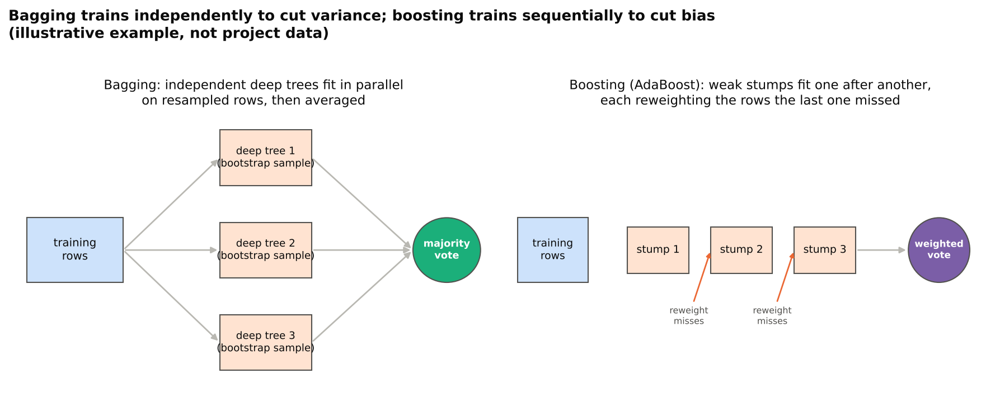
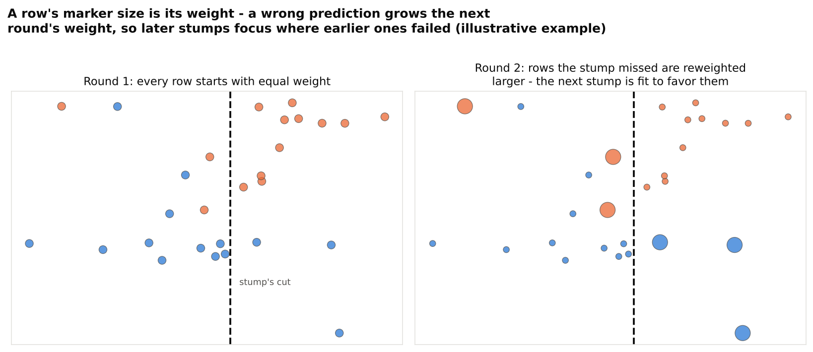
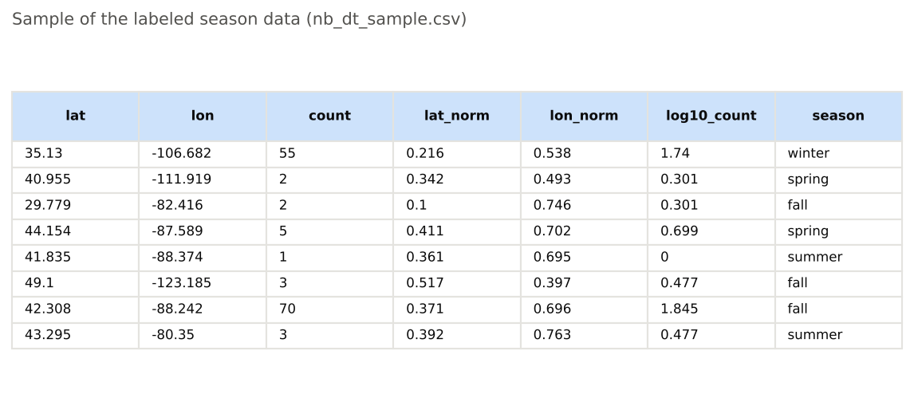
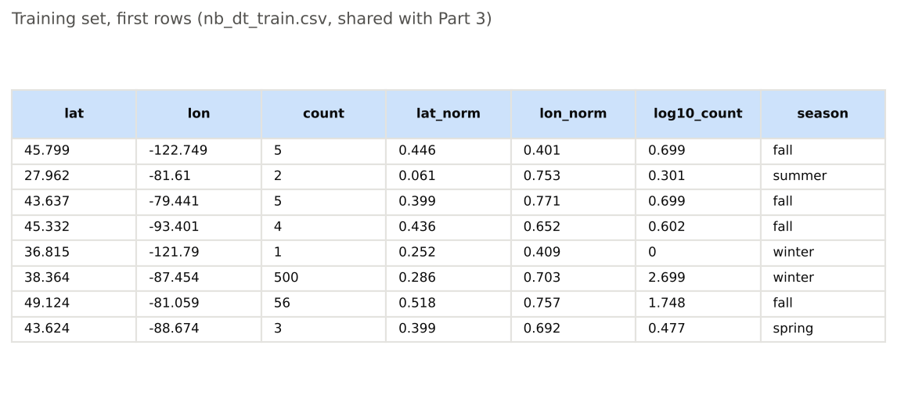
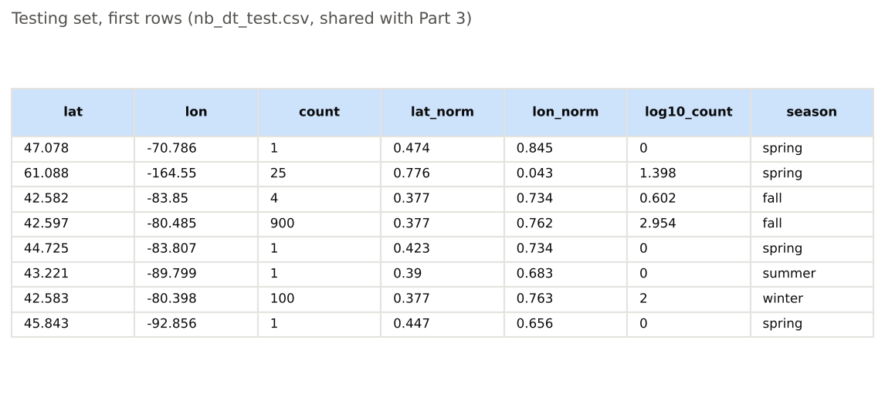
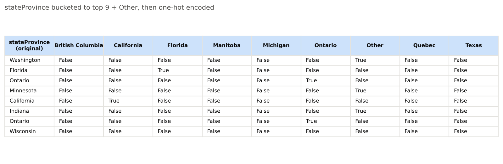
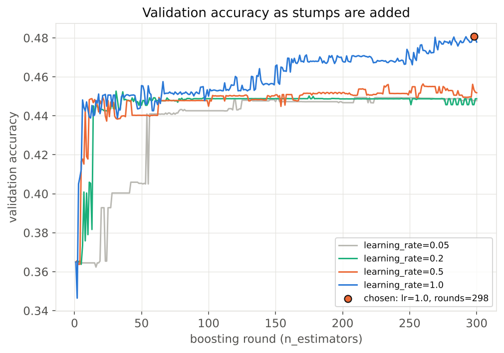
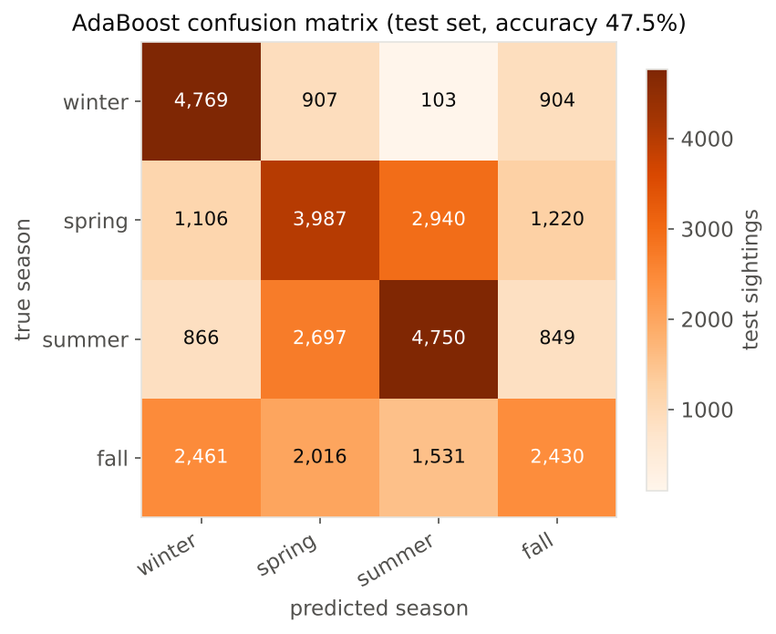

AdaBoost
AdaBoost is a supervised classification method that builds a sequence of very simple classifiers, one after another, each one trained to pay more attention to whatever the ones before it got wrong. Here it is asked the same question as Part 3's single decision tree: predict the season a sighting happened in, from only where it was and how many birds were counted.
OverviewBoosting vs. bagging. Bagging (the idea behind a random forest) fits many deep, flexible trees independently and in parallel, each on its own bootstrap-resampled rows, and then averages their votes; each tree is already low-bias and high-variance, and averaging cancels out the variance. Boosting does the opposite: it fits many very weak, high-bias learners one after another in sequence, and each new one is trained on a reweighted version of the data that emphasizes exactly the rows the previous ones got wrong. Where bagging reduces variance by averaging independent models, boosting reduces bias by chaining dependent ones, each patching the last.
Decision stumps. AdaBoost's weak learner is typically a decision stump, a decision tree of depth 1: one single yes-or-no split on one feature, with two leaves. A stump barely does better than guessing on its own (see the baseline below), but it is cheap to fit, and boosting's whole premise is that a long, carefully reweighted sequence of weak learners can combine into something strong.
Reweighting and alpha. Every row starts with equal weight 1/n. After each stump is fit, its weighted error rate ε is computed (the fraction of weighted mistakes it makes), and that stump earns a vote weight α = ln((1-ε)/ε) (scikit-learn's multiclass SAMME version adds ln(K-1) for K classes), which is large when the stump is accurate and small, even negative, when it barely beats chance. Every row the stump got wrong then has its weight multiplied up by roughly eα before the weights are renormalized to sum to 1 again, so the next stump in the sequence is fit on data that leans harder toward the rows that are still being missed.
The final vote. After M rounds, the final prediction is not a simple majority of the M stumps; it is a weighted vote, ∑m αm hm(x), with each stump's say in the outcome set by how accurate it was when it was fit. A stump that nailed a hard reweighted problem gets more influence than one that barely scraped by.


code/11_concept_diagrams3.py has been run.

code/11_concept_diagrams3.py has been run.The headline model reuses the exact stratified 80/20 split already saved to nb_dt_train.csv and nb_dt_test.csv (134,142 training rows, 33,536 disjoint testing rows, three numeric features: lat_norm, lon_norm, log10_count, date left out of the features for the same reason as every classification tab in this project), so its test-set accuracy below is directly comparable, row for row, to Part 3's Decision Tree. To choose AdaBoost's own settings honestly, 25% of the training rows are further carved off as a validation set (100,606 train / 33,536 validation), used only to pick learning_rate and n_estimators; the 33,536-row test set is never touched until the model is finalized.


code/10_adaboost.py has been run.

code/10_adaboost.py has been run.

code/10_adaboost.py has been run.One-hot encoding a categorical column. scikit-learn's AdaBoostClassifier needs every feature to be numeric. The three features above already are, but observations_clean.csv also carries stateProvince, a 62-category text column left out of the main split, which is used here to demonstrate encoding a categorical variable properly: the 9 most common states/provinces in the training rows keep their own name and everything else is bucketed to "Other", then that 10-category column is one-hot encoded into 10 separate 0/1 columns, one per bucket, so a tree-based model like AdaBoost can split on "is this Ontario or not" the same way it splits on a numeric threshold.


code/10_adaboost.py has been run.Written in Python with pandas, scikit-learn (AdaBoostClassifier, DecisionTreeClassifier as the stump, confusion_matrix), and matplotlib. Full code: code/10_adaboost.py (the overview diagrams above come from code/11_concept_diagrams3.py).
Stump baseline. A single decision stump, fit on the training rows and scored on validation, reaches only 36.5% accuracy, barely above the roughly-even four-way chance floor, confirming the Overview's point that one stump alone is a very weak classifier on its own.
Tuning learning_rate and n_estimators. Four learning rates (0.05, 0.2, 0.5, 1.0) were each run out to 300 boosting rounds, tracking validation accuracy after every single round added. Lower rates climb smoothly but plateau early (0.05 settles near 44.9%, 0.2 near 44.9%, 0.5 near 45.6%), while learning_rate=1.0 climbs further and reaches the best validation accuracy, 48.1%, at round 298. A follow-up check running learning_rate=1.0 out to 900 rounds confirms this is a genuine plateau and not just an artifact of stopping the search too early: the best it finds by round 881 is 48.3%, only two-tenths of a point higher, so 298 rounds at learning_rate=1.0 is the setting carried forward.


code/10_adaboost.py has been run.Final test result, against the Decision Tree. Refit on all 134,142 training rows with the chosen settings and scored once on the untouched 33,536-row test set, this AdaBoost model reaches 47.5% accuracy — below Part 3's single Decision Tree, which reached 53.2% on these identical rows, a 5.6-point gap. Three hundred shallow stumps, each only a single split, do not carve up this three-feature space as effectively here as one deeper tree that can combine latitude, longitude, and flock size across up to 12 sequential splits in one model.


code/10_adaboost.py has been run.Which mistake would this model rather make? Missing a true winter sighting (calling it something else) happens least often here, 28.6% of the time, while missing a true fall sighting happens most, 71.2% of the time. For a project interested in migration timing, a model that is relatively reliable on winter but weak on fall is a meaningful asymmetry: fall sightings get scattered almost randomly across the other three predicted seasons, which says flock size and location alone do not pin fall down the way they pin down the compact, far-south winter range.
Does one-hot-encoded location help? Adding the 10 bucketed stateProvince columns to the same 298-round, learning_rate=1.0 model changes test accuracy from 47.5% to 47.5% (a 0.1-point drop, essentially no change). That null result makes sense: lat_norm and lon_norm already describe a sighting's location continuously and far more precisely than a 10-bucket state/province label can, so the coarser categorical version adds encoding complexity without adding information the model did not already have.
A worked first round, by hand. Before any reweighting, all 134,142 training rows carry equal weight 1/n, so the first stump's weighted error is just its plain misclassification rate: it gets 85,082 rows wrong, for ε1 = 85,082 / 134,142 = 0.634. Its vote weight is α1 = ln((1-0.634)/0.634) + ln(4-1) = 0.548 (the ln(K-1) = ln 3 term is SAMME's multiclass correction). scikit-learn's own fitted model reports estimator_errors_[0] = 0.634 and estimator_weights_[0] = 0.548, an exact match to the by-hand numbers. After reweighting by eα1 and renormalizing, a misclassified row's weight rises by a factor of about 1.73 relative to a correctly classified row's, exactly the push that sends the second stump looking harder at what the first one missed.
More models is not automatically a better model: three hundred decision stumps, individually almost useless (36.5% accuracy for just one), combine through boosting into a classifier that clears 47%, a real improvement over guessing but still short of what a single well-tuned deeper tree reaches on this same three-feature problem. The clearest asymmetry in what AdaBoost learns here is between winter, which it recovers correctly most of the time, and fall, which it confuses with everything else; that split lines up with how distinct the underlying geography is, a compact southern wintering range is a far easier target for any classifier than a fall migration that is spread thin across the whole study area. Adding a coarse, categorical description of location on top of the already-continuous latitude and longitude changed nothing, a useful negative result: for this problem the right kind of location information was already in the model, and more features are not the same as more information.